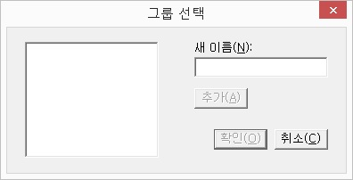

현재 선택되어 있는 레코드를 원하는 그룹에 추가합니다.

1. 기존 그룹에 레코드 추가
'그룹 선택' 대화상자가 나타나면 목록에서 원하는 그룹을 선택한 후 '확인' 버튼을 누릅니다.
2. 새로운 그룹을 만들면서 레코드 추가
새로운 그룹을 만들고자 하는 경우, '새 이름' 편집창에 그룹 이름을 입력하고 '추가' 버튼을 누릅니다.
새로운 그룹이 그룹 목록에 나타나며, 원하는 목록에 위치한 뒤, '확인' 버튼을 누릅니다.
현제 레코드를 등록된 그룹에서 삭제합니다.
만일 현재 레코드가 여러 그룹에 속해있는 경우, '그룹 선택' 대화상자가 나타나며 레코드 삭제를 원하는 그룹을 선택합니다.
그룹에서 레코드를 삭제하여 해당 그룹에 남아 있는 레코드가 없는 경우 그룹은 자동으로 삭제됩니다.
* 그룹에서 삭제는 단지 그룹과의 연결만을 해제하는 것이며 레코드 정보가 삭제되는 것은 아닙니다.
선택한 그룹을 삭제합니다.
* 이 기능은 그룹 창의 그룹 목록에 포커스가 있는 경우에만 동작합니다.
* 그룹 삭제는 그룹 정보만을 삭제하는 것이며, 그룹에 속한 레코드는 이 기능에 영향을 받지 않습니다.
선택한 그룹의 이름을 변경합니다.
다음 순서에 따라 그룹 이름을 변경합니다.
① 이름 변경을 원하는 그룹을 선택합니다.
② [그룹] 메뉴의 [이름 변경] 메뉴를 실행하거나, <F2>키를 누릅니다.
③ 변경을 원하는 그룹 이름을 입력한 후 <Enter>키를 누릅니다.
취소를 원할 경우 <Esc>키를 누릅니다.
* 이 기능은 그룹 창의 그룹 목록에 포커스가 있는 경우에만 동작합니다.